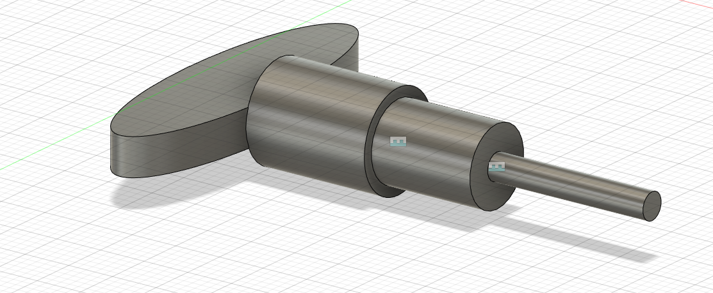
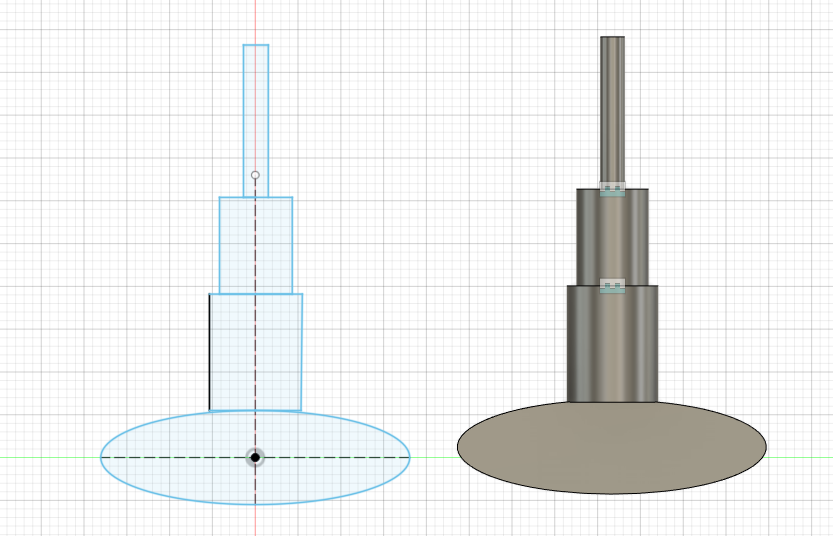
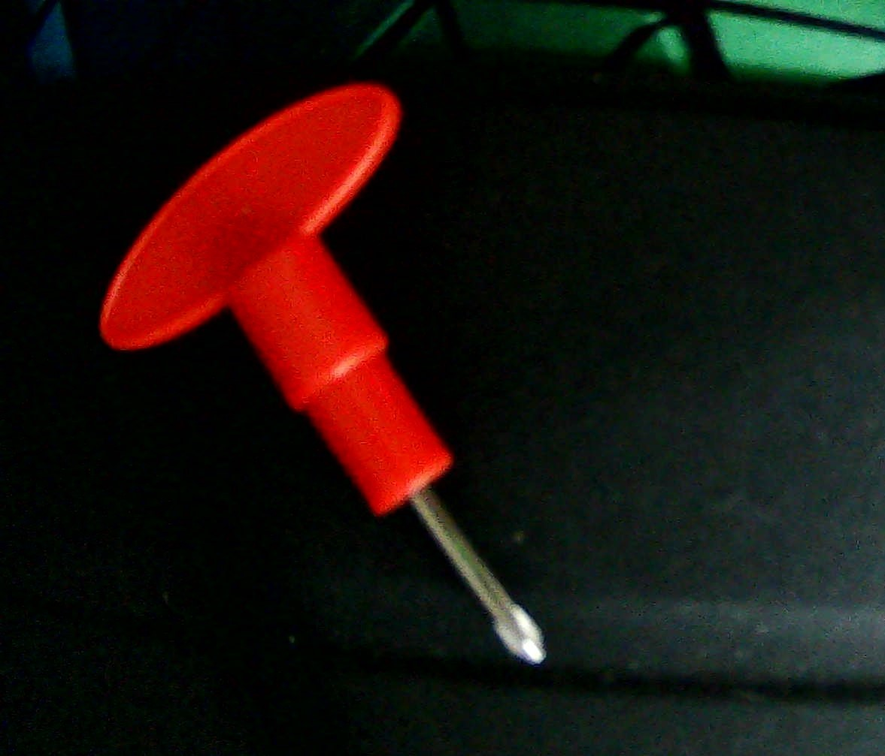
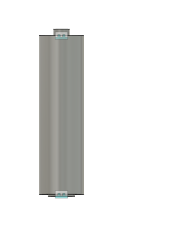
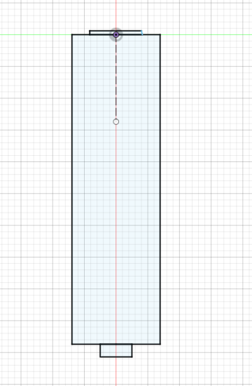
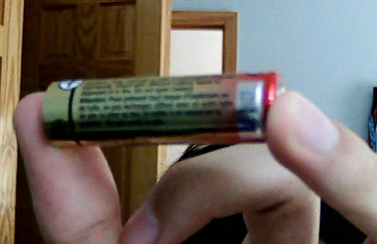

Today, we were introduced to some forms of 2D and eventually 3D modeling with Fusion360. We also got some knowledge about cutters like laser cutter and vinyl cutters. The main objective for this homework is actually figuring out how to use Fusion360 because obviously I need some practice with this new software.
Firstly, I followed along some of the tutorials that were posted and I rewatched the zoom as a little refresher. I first made some arcs and learned that you could just straight up modify certain things like the angles or the lenghts. I learned also how to assemble blocks were would prove to be very useful to me. I just mainly first played around with the stuff and followed along with the video.
Following the watching of the videos, I looked around my desk for something that didn't seem too bad to make because obviously I am still a beginner. I found a screwdriver that I always had with my Rubik's cube and the shapes didn't seem overly complicated. The top was an elipse, and I knew that you could make one of those in Fusion360 so that was convinent. The rest were mainly just made out of little different sized cylinders so by using the calipers. I never really got to figure out the little little details but I can always go back to it to work on it. I challenge that I faced was that the elipse part that connected with the cylinders did not connect on a smooth surface and Fusion360 had a hard time trying to piece it together. A solution I figured out was to change all the pieces into components and then try to slowly move them clsoer and closer together and then at the end, make them all into one piece were the combine option.



I had a pretty similar process with a basic AA battery I found with the kit. I had to kind of work around the cylinders not really working out too well, but overall it worked out alright.



Finally I attempted to try to put some stuff together in a seperate assembly file and I don't I really did too much. I probably need to watch a few more tutorials but right now I have a pretty baseline knowledge for Fusion360.